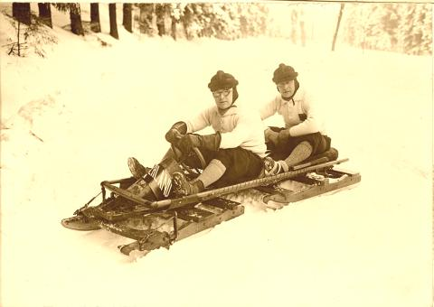

Friday, December the 2nd, 2011
back to: title, date or indexes
For instructions on making your advent calendar, see here. Today's picture shows Old Halob and fictional athlete Bobnit Tivol (played by an actor) on a winter sports enthusiasts' holiday, date unknown.

Thanks to vintagewinter